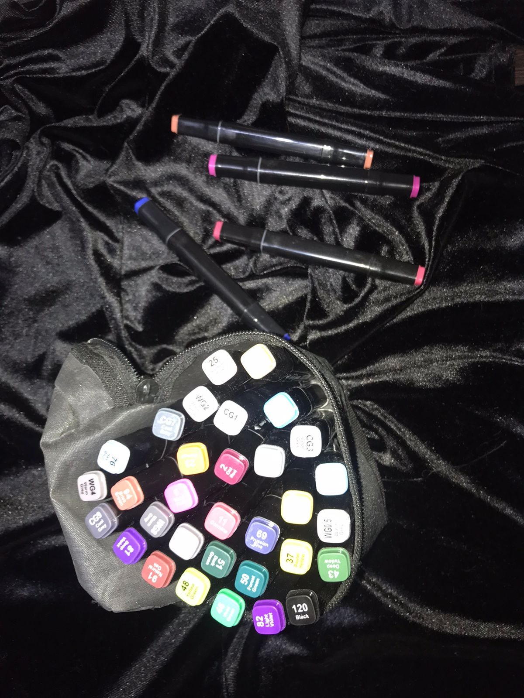
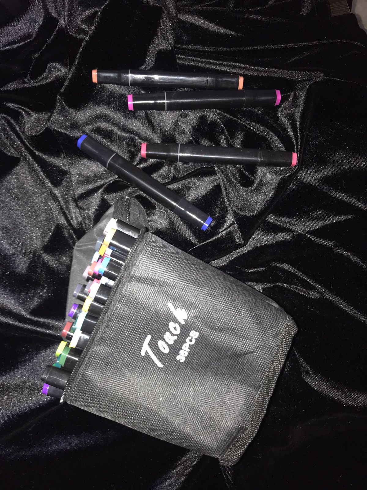

|
|
PAPELERIA "MIL LIENZOS" |
 |
|---|
| PRINCIPAL | BIENVENIDA | MISIÓN | VISIÓN | CONCLUCIÓN | CONTACTANOS |
Cómo tomar apuntes de manera creativa
.Cuando das clases, tus estudiantes habitualmente escuchan la lección y al mismo tiempo anotan todo lo que dices, pero ¿toman apuntes de manera creativa?
Ellos escriben en su cuaderno de forma apresurada todo lo que pueden retener a medida que van escuchando sin prestar la debida atención, y anotando de manera ilegible aquello realmente importante.
Está claro que estas anotaciones les permite estudiar para los exámenes con previa revisión del material, pero la mayoría de las veces no es elaborada de la mejor manera.
Y si el objetivo es tener mejores calificaciones, deben comprender lo que estudian corrigiendo la forma como toman sus apuntes.
Tips para tomar apuntes de manera eficiente
.1.- Escribe Palabras: En lugar de anotar todo lo que dice el profesor, solo apunta las ideas básicas y más importantes.
2.- Emplea colores: La técnica del subrayado te ayuda a identificar temáticas según cómo hayas organizado tu esquema de colores. De este modo, ayudas a tu memoria visual a recordar lo que anotaste durante la clase.
3.- Divide la página: Una forma creativa de lograr apuntes eficientes es dividir la página en dos o tres secciones, separando las ideas importantes de las secundarias. El método Cornell es una técnica muy popular para esto.
4.- Esquemas o mapas mentales: Si el tema es demasiado complejo o extenso, escribir las ideas en forma de árbol, con líneas que las interconecten desde un punto central, es de mucha ayuda para la compresión del argumento.
5.- Evitar abreviaturas: Abreviar palabras que luego no recuerdes que significan u obtener un texto incomprensible impide el que la captura de la información sea eficaz por lo que evitar hacer esto mejorará tus apuntes.
En conclusión, anotar de forma eficiente tus apuntes es el primer paso para organizar tu estudio y te permitirá grabar mejor la información en tu memoria, pero no se trata solo de escribir y escribir sino de hacer una nota puntual de lo que deseas recordar.
“La escritura es la pintura de la voz”. – Voltaire.
 